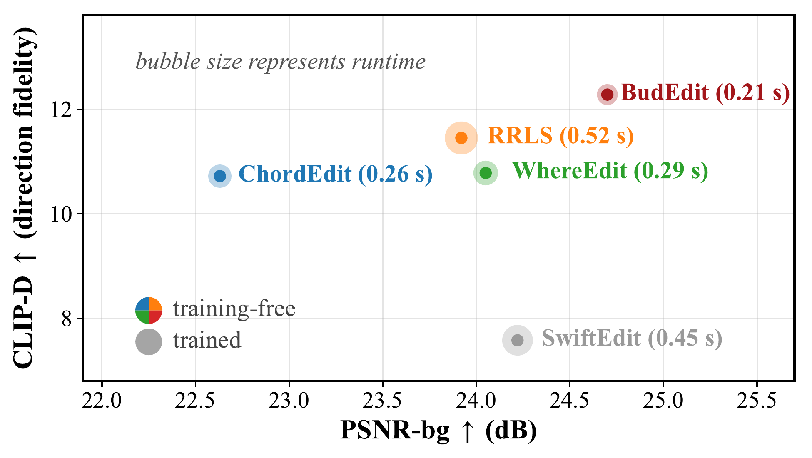
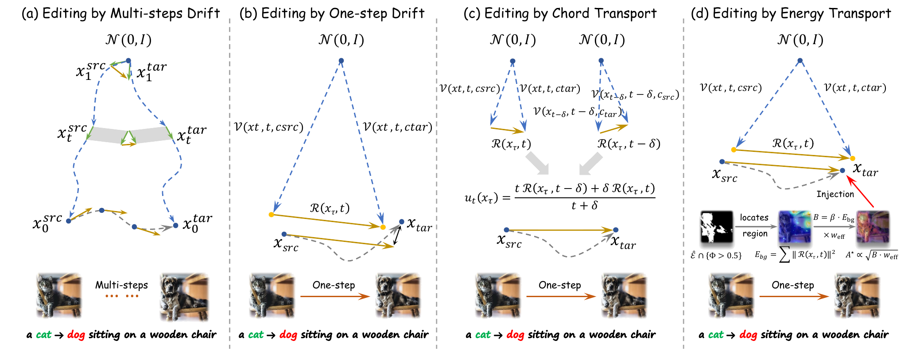
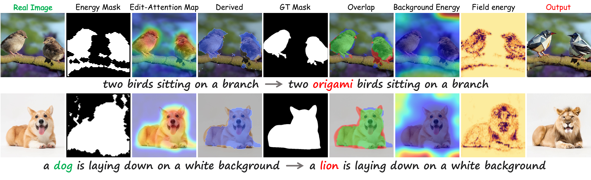
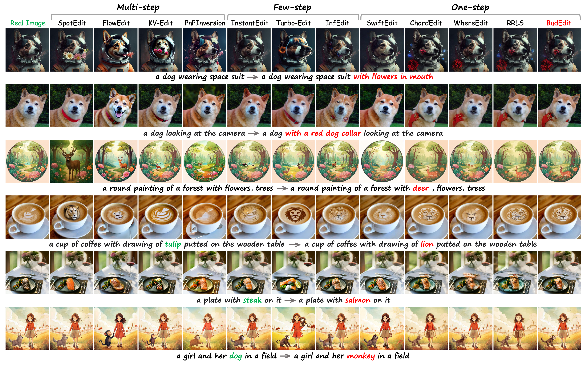
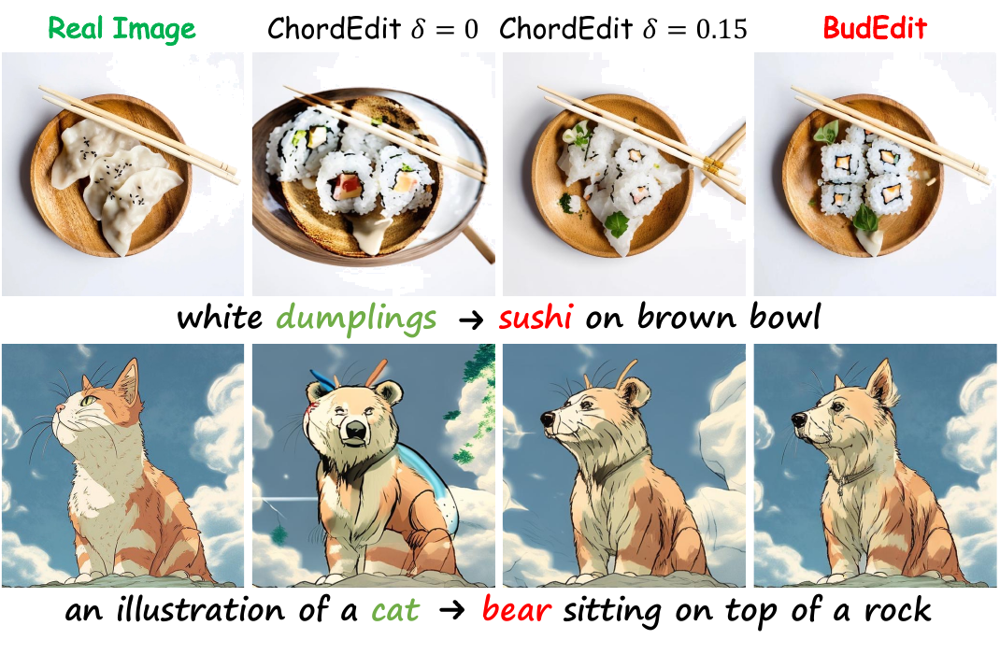
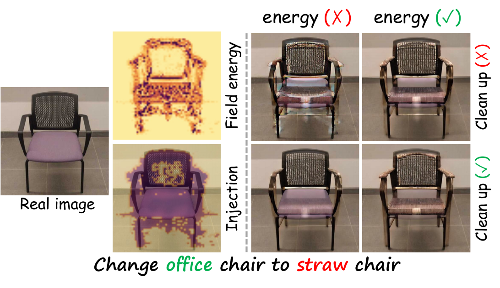

One-step text-guided diffusion editing is efficient but prone to spatially misallocated updates that distort the edited object and alter the background. Existing methods often improve stability by averaging the editing field across timesteps. We instead identify uncontrolled spatial energy allocation as a distinct and measurable failure mode: single-draw residual amplitudes are noise-sensitive, making the background field unsafe to transport directly but its total energy a usable per-image scale. BudEdit turns that scale into an image-dependent budget and reallocates it to edit-relevant regions selected jointly by residual energy and cross-attention, controlling where editing energy is spent rather than averaging over timesteps. The resulting training-free, inversion-free editor spends the budget on transport and reuses it to scale a gated refinement at a lower noise level, reusing cross-attention for localization at no additional UNet evaluation. The budgeted injection field matches its image-dependent budget exactly and vanishes on the background support it identifies, by construction. On PIE-Bench with SD-Turbo, BudEdit outperforms ChordEdit under each method's reported default settings on all 11 evaluated metrics, including a 2.1 dB gain in background PSNR, 31% lower DINO, and 36% lower LPIPS, while improving edited-region alignment and perceptual quality and reporting the lowest runtime in the comparison.

BudEdit separates how much editing energy is administered from where and how it is spent. A residual-energy support and a cross-attention localization signal, both read off the same transport forward pass at no additional UNet evaluation, determine where the budget is allocated, while a constrained allocation problem determines how it is distributed.

Harvesting the budget. The aggregate residual energy measured on the operational background support, the region outside the model's own thresholded energy support, sets an image-dependent budget $B = \beta E_{\mathrm{bg}}$. This is a measurement-derived scale, not a conserved quantity being transported: the construction matches this prescribed budget exactly, without assuming conservation of the measured background energy.
Allocation as information projection. Within the effective injection support, where the residual-energy support meets a prompt-difference attention gate, the budget is distributed by solving a KL-projection problem in closed form. The resulting amplitude map matches the attention-derived allocation profile exactly while consuming exactly the prescribed budget, and vanishes everywhere on the background support by construction.
Budget-aware gated refinement. A second, lower-noise pass then cleans up the transported image within an attention-derived gate: GatedRefine scales its correction by the same budget $B$, reinjects attenuated source-side high-frequency detail, and performs an attention-gated micro-swap near uncertain boundaries, restoring source detail without expanding the supported edit region.

On PIE-Bench with SD-Turbo (700 images, 10 editing categories, one sampling step and two UNet evaluations), BudEdit is compared against multi-step, few-step, and one-step editors under each method's own reported default configuration. Among training-free one-step editors, BudEdit leads all six background-fidelity metrics and both edited-region alignment metrics against ChordEdit, while reporting the lowest runtime (0.21s) in the comparison — a 2.1 dB PSNR gain, 31% lower DINO, and 36% lower LPIPS.
| Type | Method | Background | Edited | Properties | Efficiency | |||||||||||||
|---|---|---|---|---|---|---|---|---|---|---|---|---|---|---|---|---|---|---|
| PSNR↑ | MSE↓ | LPIPS↓ | SSIM↑ | DINO↓ | CLIP↑ | CLIP-W↑ | CLIP-E↑ | CLIP-D↑ | MUSIQ↑ | MUSIQ-E↑ | T-free | I-free | Step | NFE | Runtime(s)↓ | VRAM(MB)↓ | ||
| Multi-step | SpotEdit | 27.21 | 13.92 | 69.39 | 0.88 | 41.55 | 96.64 | 24.64 | 22.51 | 17.63 | 67.01 | 60.04 | ✓ | ✓ | 50 | 50 | 11.37 | 26384 |
| FlowEdit | 22.12 | 8.91 | 104.71 | 0.84 | 26.88 | 95.12 | 26.01 | 22.78 | 10.90 | 69.39 | 63.72 | ✓ | ✓ | 33 | 33 | 9.39 | 20180 | |
| KV-Edit | 34.91 | 0.52 | 11.26 | 0.95 | 16.57 | 97.06 | 24.56 | 20.83 | 7.95 | 71.11 | 62.10 | ✓ | ✓ | 24 | 48 | 9.42 | 31618 | |
| PnPInversion | 22.32 | 8.29 | 112.77 | 0.79 | 28.11 | 95.03 | 25.42 | 22.53 | 10.43 | 68.82 | 61.17 | ✓ | ✗ | 50 | 100 | 15.03 | 9290 | |
| Few-step | TurboEdit | 22.55 | 9.25 | 101.93 | 0.80 | 29.87 | 95.24 | 26.54 | 23.04 | 14.62 | 71.11 | 63.83 | ✓ | ✓ | 4 | 4 | 0.91 | 19574 |
| InstantEdit | 28.61 | 2.79 | 45.21 | 0.87 | 12.72 | 97.41 | 24.89 | 21.93 | 13.06 | 67.38 | 60.41 | ✓ | ✗ | 4 | 8 | 0.84 | 7812 | |
| InfEdit | 28.11 | 6.98 | 56.09 | 0.85 | 16.90 | 97.32 | 24.87 | 22.07 | 9.65 | 67.54 | 60.83 | ✓ | ✓ | 4 | 4 | 1.29 | 6794 | |
| One-step | SwiftEdit | 24.22 | 5.41 | 76.39 | 0.82 | 15.14 | 96.34 | 24.48 | 21.54 | 7.56 | 66.52 | 60.05 | ✗ | ✗ | 1 | 2 | 0.45 | 19500 |
| ChordEdit | 22.63 | 7.98 | 122.66 | 0.77 | 28.81 | 95.04 | 24.83 | 22.15 | 10.72 | 67.21 | 60.19 | ✓ | ✓ | 1 | 2 | 0.26 | 7333 | |
| WhereEdit | 24.05 | 7.97 | 108.22 | 0.80 | 31.03 | 94.93 | 25.18 | 22.66 | 10.78 | 64.28 | 56.39 | ✓ | ✓ | 1 | 3 | 0.29 | 7339 | |
| RRLS | 23.92 | 6.27 | 111.40 | 0.81 | 25.07 | 95.21 | 25.38 | 22.09 | 11.47 | 65.90 | 57.79 | ✓ | ✓ | 1 | 4 | 0.52 | 7333 | |
| BudEdit | 24.71 | 5.54 | 78.24 | 0.82 | 20.01 | 96.17 | 25.25 | 22.52 | 12.28 | 67.77 | 60.31 | ✓ | ✓ | 1 | 2 | 0.21 | 7319 | |
← Scroll horizontally to see all columns →
Quantitative comparison on PIE-Bench. T-free: training-free. I-free: inversion-free. Best and second-best among one-step methods are highlighted in yellow and blue, ties included.

Ablations confirm that both the spatial reallocation mechanism and the second-pass cleanup are individually necessary and jointly complementary: reallocation alone can overlay target texture without fully completing the edit, cleanup alone yields only a slight structural change, and only the full configuration converts the edit coherently while preserving the background.
| Config | PSNR↑ | MSE↓ | CLIP-W↑ | CLIP-E↑ | MUSIQ-E↑ |
|---|---|---|---|---|---|
| δ=0 | 20.13 | 13.34 | 25.11 | 22.54 | 55.97 |
| δ=0.15 | 22.63 | 7.98 | 24.83 | 22.15 | 60.19 |
| BudEdit | 24.71 | 5.54 | 25.25 | 22.52 | 60.31 |
ChordEdit temporal-window ablation. ChordEdit rows use $t_s{=}0.9$; BudEdit uses $t_s{=}0.78$.

| Energy | Cleanup | PSNR↑ | SSIM↑ | CLIP-E↑ | CLIP-D↑ | MUSIQ-E↑ | NFE↓ |
|---|---|---|---|---|---|---|---|
| ✗ | ✗ | 26.14 | 0.85 | 20.51 | 3.48 | 54.49 | 1 |
| ✓ | ✗ | 25.73 | 0.84 | 20.82 | 5.05 | 54.77 | 1 |
| ✗ | ✓ | 25.92 | 0.82 | 21.81 | 9.35 | 59.47 | 2 |
| ✓ | ✓ | 24.71 | 0.82 | 22.52 | 12.28 | 60.31 | 2 |
Factorial ablation of energy reallocation and cleanup. Bold marks column best.

BudEdit identifies uncontrolled spatial energy allocation as a measurable failure mode of one-step diffusion editing, distinct from the temporal instability that prior work has targeted. By converting the total residual energy on the background support into an image-dependent budget, and allocating it via a closed-form information projection over an attention-gated support, BudEdit controls where editing energy is spent rather than only how much of it survives across timesteps. This training-free, inversion-free approach improves on all 11 evaluated PIE-Bench metrics over ChordEdit while reporting the lowest runtime among the compared one-step editors, and the budgeted injection field provably vanishes on the background support it identifies.
@article{zhou2027budedit,
title = {Beyond Temporal Smoothing: Spatial Energy Budgets Stabilize One-Step Diffusion Editing},
author = {Zhou, Shengxiao and Luo, Lei and Yang, Jian},
journal = {arXiv preprint arXiv:2509.XXXXX},
year = {2027}
}